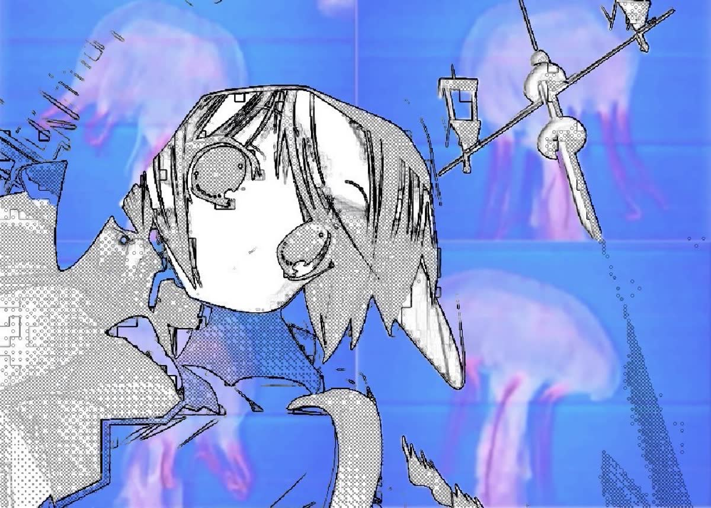
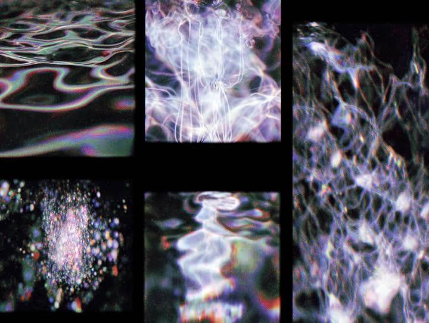

silent
❧
station 2
record
library
layers
navi
paul
sign out
wired
close
silent ❧ station 2
who's recording?
silent ❧ someone new
say hi to the camera
a photo and a first name.
station camera · live
no photo yet
◉ take the photo
first name
hand photos ·
later is fine
right · back
right · palm
left · back
left · palm
that's me, let's go
← I'm already here

pick up where you left off
▶ record
space
just move for five minutes
Get ready
switch to the left hand
← back
start
space
just you.
the demonstration
now
0
good repeats
stop & save
esc
demonstration
you
let's do that one together
press space when you're ready
0:00
of 5:00
ready
glove
probe
force object

saved
+5
:12
▶ one more take
i'm done for now
your programme
test switches
glove off
probe off skin
image looks different
sensor at its limit
disk nearly full
slower than the demonstration
opening less than shown
ring finger is off
not following at all
assess now
correct now
d hides